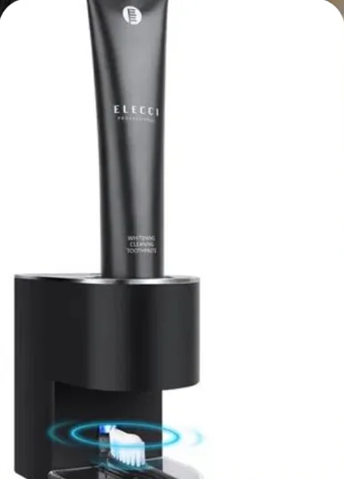
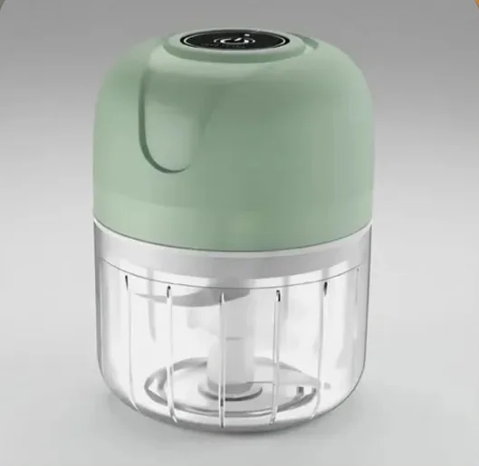

Organização01
Cada coisa
no seu lugar.
no seu lugar.
Uma cozinha mais leve começa com menos coisas na bancada.
Pequenas mudanças para encontrar o que você precisa e ganhar espaço, sem uma reforma.
Ler o guiaBEM-VINDA AO SEU CANTINHO
Dicas que cabem no dia e achados que fazem sentido. Porque cuidar da casa também pode ser cuidar de você.
Encontre uma ideia para hojeSem casa perfeita. Com espaço para a vida.

COMECE POR AQUI
Para a pia, a gaveta ou aquele cantinho
que merece um pouco de atenção.
9 guias encontrados.
Pequenas mudanças para encontrar o que você precisa e ganhar espaço, sem uma reforma.
Ler o guiaDivida o cuidado da casa em tarefas pequenas e combine o trabalho com quem mora com você.
Ler o guiaUm bom achado facilita a sua vida. Um vídeo bonito, sozinho, não garante isso.
Ler o guiaOrganize por uso, aproveite os recipientes da casa e leve uma lista mais clara ao mercado.
Ler o guiaUma bancada livre e poucos grupos claros podem facilitar a rotina de toda a casa.
Ler o guiaUm roteiro flexível para dias cheios, com prioridade, pausa e tarefas compartilhadas.
Ler o guiaPense em lavar, secar e guardar como partes de uma mesma tarefa, dentro da sua rotina.
Ler o guiaCapacidade, uso permitido e limpeza dizem mais que um vídeo de poucos segundos.
Ler o guiaInclua frete, reposição, espaço e cuidado na comparação, além do preço do anúncio.
Ler o guiaTente buscar por cozinha, limpeza ou compras.
UM LEMBRETE CARINHOSO
Comece pequeno, aproveite o que já tem e compartilhe as tarefas.
Uma rotina possível vale mais que uma rotina perfeita.
QUANDO UMA ESCOLHA AJUDA
Primeiro, a necessidade.
Depois, o produto.
Potes e acessórios podem ajudar. Confira medidas, capacidade e espaço antes de escolher.
Veja o que observarUm utensílio pequeno faz sentido quando resolve uma tarefa que aparece na sua rotina.
Encontre seu ponto de partidaUm vídeo chama a atenção. Um anúncio claro ajuda você a decidir com mais segurança.
Confira as cinco perguntas Oferta cadastrada
Oferta cadastradaCasa
Para pequenos respingos e cantinhos que pedem uma ferramenta compacta.

Oferta cadastradaCasa
Para comparar uma forma diferente de organizar o uso da pasta na bancada do banheiro.

Oferta cadastradaCozinha
Um formato pequeno para comparar com a quantidade que você costuma preparar.
Algumas recomendações contêm links de afiliado. A compra acontece no Mercado Livre. Não exibimos preços ou descontos sem confirmação.
Utilidade antes do impulso. Recomendamos olhar para o que faz sentido na sua casa.
Informação clara. Diferenciamos dicas, sugestões e links de afiliado.
Você escolhe. Sem contagem regressiva, promessa de milagre ou pressão para comprar.
Conheça nossa política editorial